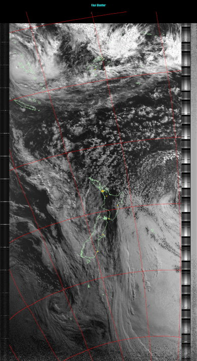
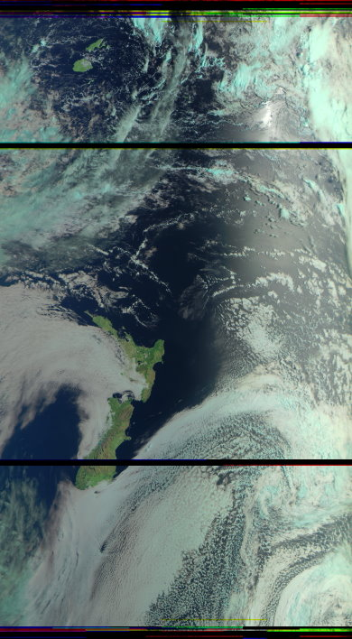
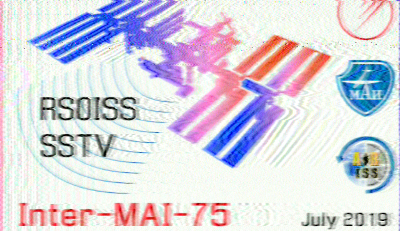
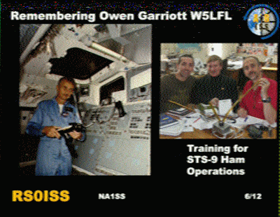

This site publishes data captured from satellites orbiting the Earth, received with a low-cost SDR, with more
information about and examples decodes from each type of satellite being captured shown below:

Click on
image for a larger version
or
Full size version - opens in a new window
|
General Information:
- Passes overhead multiple times a day. (Around dawn and dusk in New Zealand)
- Easiest satellites to receive
- You can get something even if the signal is really weak
- Analogue Signal
Satellites:
Satellites before NOAA 15 have all failed- NOAA 15
NOAA 16 and 17 have failed and been decommissioned- NOAA 18
- NOAA 19
NOAA 20 and all future satellites no longer broadcast APT
More info is on the satellite status page.
About this pass:
- You can see Cyclone
Harold, a category 5 cyclone, in the top left of the image.
- The eye of the storm is clearly visible
- Max pass elevation - 79°
- Pass start (NZST) - Mon 06 Apr 2020 09:03:32
- Pass end (NZST) - Mon 06 Apr 2020 09:19:25
- Pass start (UTC) - Sun 05 Apr 2020 21:03:32
- Pass end (UTC) - Sun 05 Apr 2020 21:19:25
- SDR type - RTL-SDR v3 (RTL2838UHIDIR)
- Antenna - Quadrifilar Helicoidal antenna (137.6 MHz)
- Hardware used - RTL-SDR FM Block, Nooelec NOAA Sawbird (LNA + Bandpass Filter)

|

Click on image for a larger version
or
Full size version - opens in a new
window
|
General Information:
- Launched by Roscosmos, the Russian space agency
- Suffers from buffer overflows caused by a bug in the code (more info below)
- Requires a strong signal to lock on to and decode
- Digital Signal
Satellites:
M1: Mission ended in 2014, although it sometimes works in sunlight- M2: Functional
M2-1: Programming error resulted in it failing to separate from the Soyuz-2.1b
upper stage with the result that it disintegrated on rentry.M2-2: Hit by a micrometeorite in 2019, resulting in severe damage to the
batteries. With reduced power available, LRPT was permanently disabled.
More info is on the satellite status page.
Pass Information:
- The pass on the left from Meteor-M 2 was received perfectly. However, the horizontal black
lines you see in the decode are caused by buffer overflows in a code bug on the satellite
itself.
- These overflows occur when the satellite has received a certain amount of data (so more
often over land than sea), and this typically happens around once every 6 minutes.
- Max pass elevation - 62°
- Pass start (NZDT) - Tue 11 Feb 2020 08:43:57
- Pass end (NZDT) - Tue 11 Feb 2020 08:59:15
- Pass start (UTC) - Mon 10 Feb 2020 19:43:57
- Pass end (UTC) - Mon 10 Feb 2020 19:59:15
- SDR type - RTL-SDR v3 (RTL2838UHIDIR)
- Antenna - Quadrifilar Helicoidal antenna (137.6 MHz)
- Frequency range - 135-140 MHz from bandpass filter
- Modules - RTL-SDR FM Block, Nooelec NOAA Sawbird (LNA + Bandpass Filter)

|


Click on an
image for a larger version
|
International Space Station - Zarya Module
General Information:
- The ISS is a joint project between between five participating
space agencies: NASA (United States), Roscosmos (Russia), JAXA
(Japan), ESA (Europe), and CSA (Canada).
- There have been crew living aboard continuously since 2nd November 2000.
- There is a ham radio onboard in the Russian Zarya module, which is often used by astronauts
to make contact with ground stations, and also sometimes for SSTV broadcasts (See Below).
- The ISS travels at an orbital speed of 8km per second. That means it circles the entire
planet once every 90 minutes.
- The ISS is the largest manned object ever assembled in space, requiring multiple launches
from Russian and American satellite launchers.
- It is the single most expensive object ever built. The cost of the ISS has been estimated at
over US$120 billion.
Pass Information:
- Occasionally broadcasts SSTV as part of "events" on frequency
145.8MHz.
- Although it can be captured from around the world, events may cover just a handful of orbits
and these are often prioritised for those passing over Russia.
- More info about upcoming events can be found on the satellite
status page.
|
This site is a joint project between Mike (KiwiinNZ) and Albert (Technobird22). We are looking to turn this
into an open source solution so that anyone can set up their own automatic decoding station. This site is
currently under very active development,
so you will often notice changes to it.
Everything you see here, other than the capture pages is available on our Github: https://github.com/wxcapture/wxcapture
Please report any bugs to wxcapture@gmail.com or submit an issue on Github
{kind=link}
{kind=link}
{kind=link}
{kind=link}